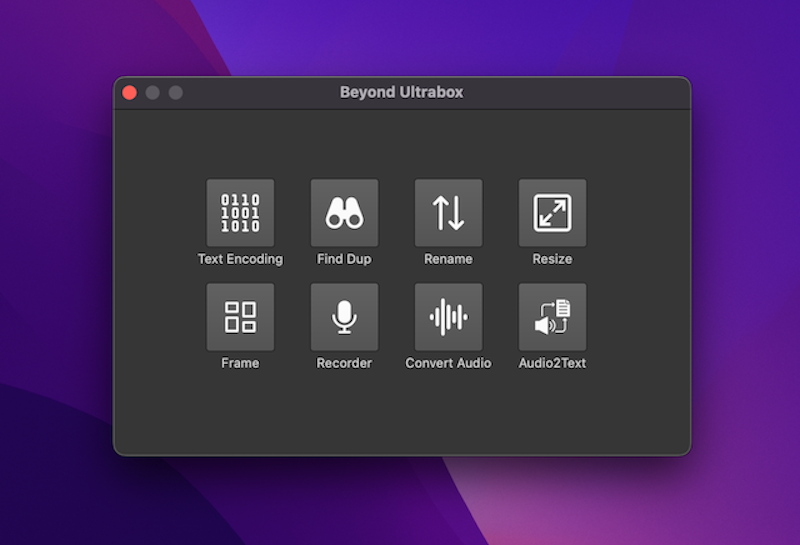

Beyond Ultrabox
A series of useful auxiliary software application.
Windows
MacOS
Version 1.0.0
• macOS 10.15+ / Windows 10/11
✨ Main Tools
Text Encoding
Text codepage detect and convert tool. It support convert single file or batch files.
Find Dup
This is a tool for finding duplicate files. It is simple, fast, and easy to use.
Rename
This is a tool for rename any files. Several formats can combined to rename anything.
Resize
This tool let you resize jpeg,png,bmp,webp... Also it have AI-Upscale to enhance old photos.
Frame
Frame photos, make beautiful album. Have over 100+ styles, 90+ background pattern.
Recorder
This is an Audio Recorder. Support record aac / ac3 / mp3 / ogg / wav.
Audio Converter
Convert audio to other format. Support convert video/audio to mp3/m4a/ogg.
📸 Screenshot
‹

›


 Windows
Windows